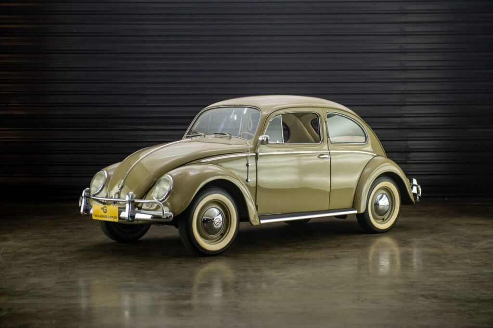
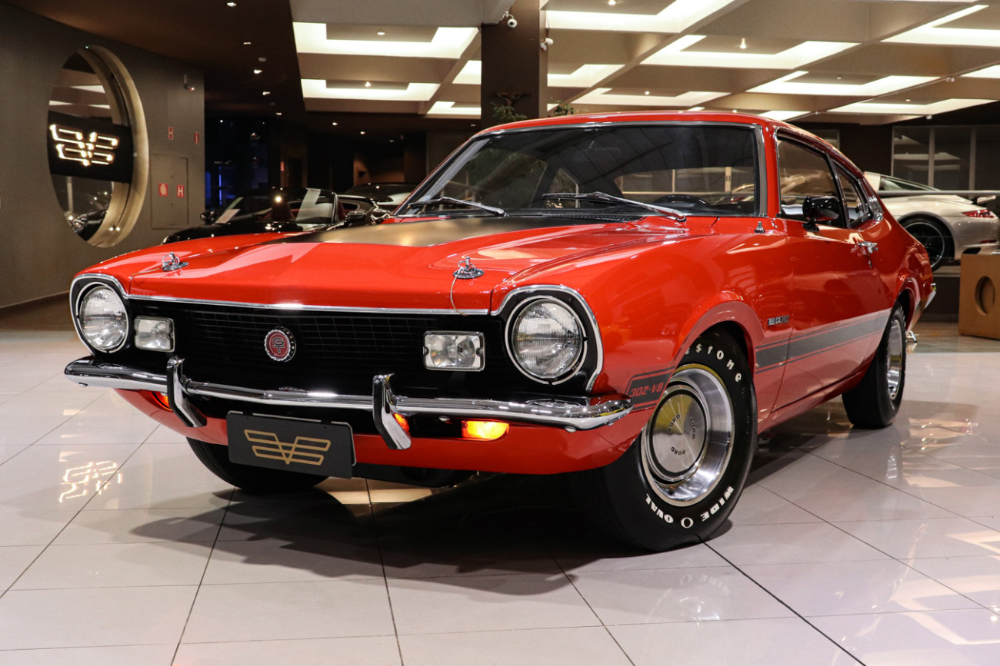
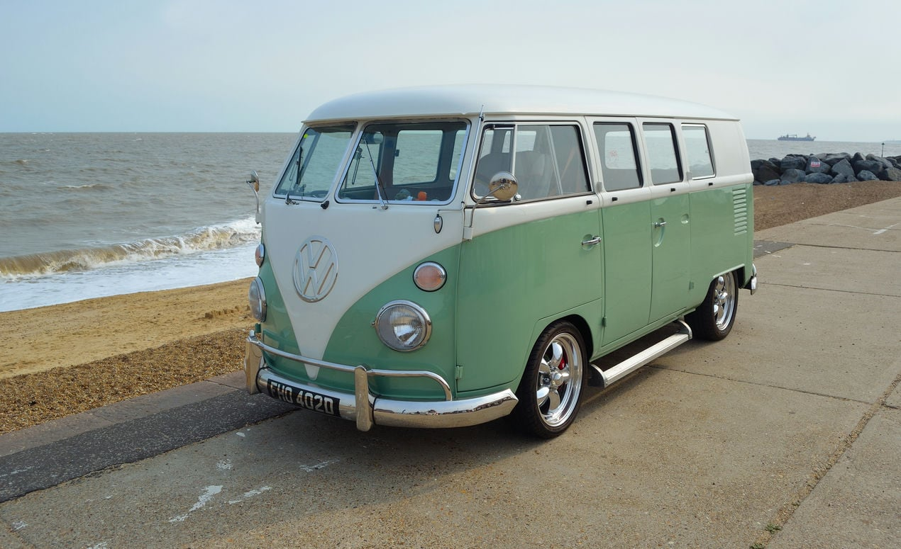
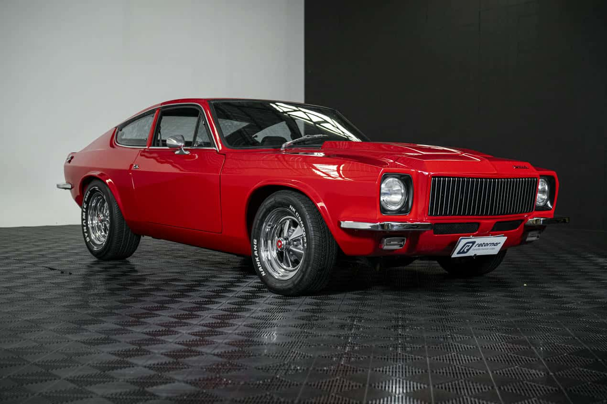
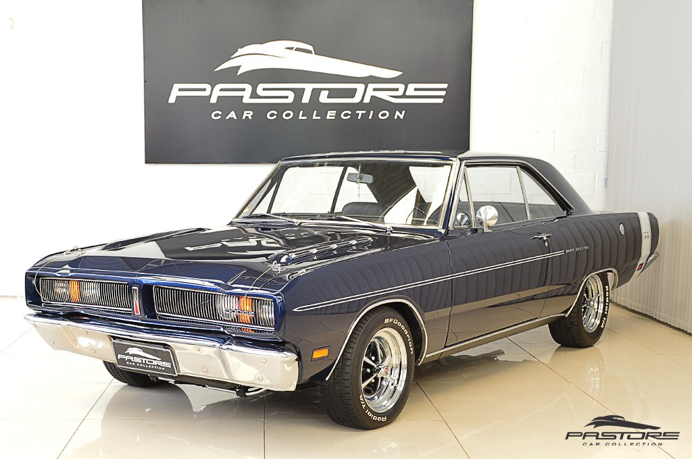

Clássicos Nacionais

Chevrolet Opala
O luxuoso e potente sedã que se tornou um ícone de status e performance nas décadas de 70 e 80.

Volkswagen Fusca
O carro mais amado do Brasil. Símbolo de simplicidade, carisma e robustez mecânica.

Ford Maverick
O lendário "muscle car" brasileiro, famoso por seu design agressivo e o ronco inconfundível do motor V8.

Volkswagen Kombi
A "Velha Senhora". Versátil e trabalhadora, transportou famílias e mercadorias por todo o país.

Puma GT
O esportivo nacional com design inspirado nos carros europeus, combinando estilo e leveza.

Dodge Dart
Sinônimo de luxo e imponência, este clássico da Chrysler marcou época com seu conforto e motor V8.